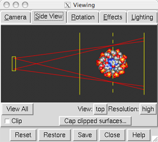

Top View
| Top View
(during cross-eye stereo use) |
|---|
|  |
In the Side View,
setting View to top shows the relationship between
the viewer and the Chimera scene from the top. This Top View
allows perspective and stereo parameters to be adjusted interactively.
These and additional related parameters can be changed numerically in the
Camera tool.
- The horizontal field of view is the angle formed by
the lines emanating from the eye position
when perspective is being used.
This angle can be adjusted by dragging one of the red lines with
the left mouse button or dragging the eye position horizontally
with the middle mouse button.
- When stereo is on, the eye separation can be adjusted by dragging
the eye position vertically with the middle mouse button.
- The vertical dashed line represents the plane of the screen
(the so-called focal plane).
When viewed in stereo,
items in front of the focal plane will appear to project from the screen
and items behind it will appear to recede behind the screen.
Dragging the dashed line with the left mouse button moves
the focal plane relative to the items in view. At the same time,
the eye position will adjust (changing the apparent scale)
to keep the distance to screen constant.
The eye separation and distance to screen
govern the parallax between the left- and right-eye views.
The horizontal field of view and distance to screen
are interdependent; changing one changes the other, in the opposite
direction (details...).
The scale, camera mode, and
global clipping planes
can be adjusted just as in the
standard Side View.
UCSF Computer Graphics Laboratory / November 2008